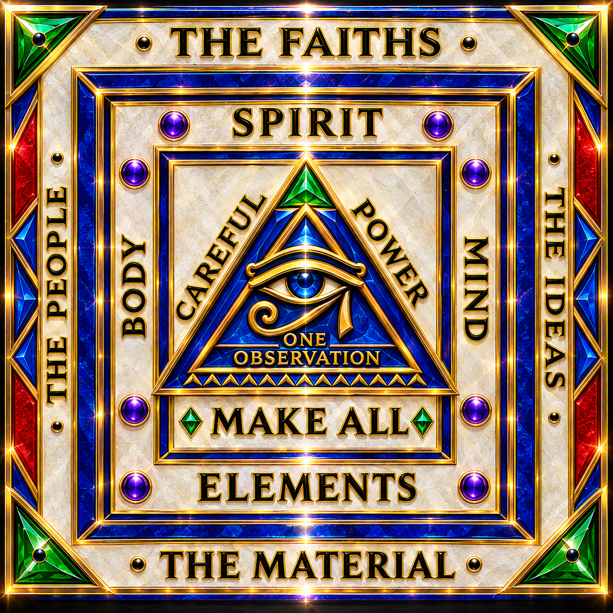

MAKURABA

MAKURABA
Ma-ku-ra-ba | noun | Philosophical; cosmological; metaphysical
Definition: A recursively generative philosophical and cosmological framework conceived as a miniature representation of existence itself, in which unity, duality, polarity, observation, authority, subversion, and transformation participate in an interconnected process of continual becoming. Derived as a deliberate adaptation of the Hebrew Merkavah (מֶרְכָּבָה), meaning “chariot,” MAKURABA extends the symbolic conception of the divine Throne-Chariot into a comprehensive model of relational existence, wherein the structure of the whole is expressed through the dynamic relationships of its constituent parts.
Numerological designation: Under the standard Western Pythagorean letter-number correspondence, the letters of MAKURABA yield a cumulative value of twenty-three (M = 4, A = 1, K = 2, U = 3, R = 9, A = 1, B = 2, A = 1). Through decimal digit reduction (2 + 3 = 5), the name resolves to five, establishing a deliberate symbolic correspondence with the pentagon and the principle of fivefold geometric organization.
Geometric correspondence: The pentagonal association introduces the golden ratio, φ = (1 + √5)/2, as an intrinsic mathematical relationship within the regular pentagon and its diagonals. This correspondence extends the numerical symbolism of MAKURABA into the geometry of proportional relationships, providing a mathematical analogue for the framework's emphasis on unity, differentiation, and recursive relational structure.
Metaphysical significance: MAKURABA represents the game of the grand universal creator and its creation as an ongoing relational process in which an undifferentiated primitive unity gives rise to distinctions, distinctions establish polarity, polarity enables interaction, and interaction generates transformation and renewed configurations of existence. Its governing principle maintains the coexistence of authoritative order and the capacity for self-subversion, preserving the possibility of transformation without equating the destruction of a particular order with the extinction of generative capacity.
Principle of recursive correspondence: MAKURABA functions as a symbolic microcosm of the game it represents. Its linguistic construction, numerical reduction, geometric associations, and philosophical principles are intended to reproduce, at a conceptual level, the relationships through which unity becomes differentiated, differentiated aspects become relational, and relationships generate further possibilities.
Distinguishing characteristic: The integration of linguistic adaptation, Western numerological correspondence, pentagonal geometry, golden-ratio relationships, and recursive cosmology into a singular conceptual construct.
Usage: MAKURABA describes the universe as a generative game in which unity and distinction, order and subversion, and creation and transformation remain dynamically interrelated.
Terminological qualification: The numerical value of twenty-three and its reduction to five are reproducible under the specified letter-number system. The pentagon's golden-ratio relationships are independently established mathematical properties. Their integration into MAKURABA constitutes a deliberate symbolic and philosophical interpretation rather than evidence that the numerical reduction itself generates the golden ratio as a mathematical consequence.